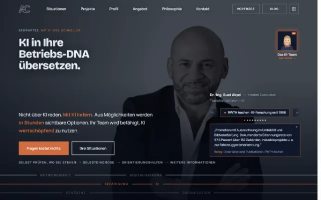
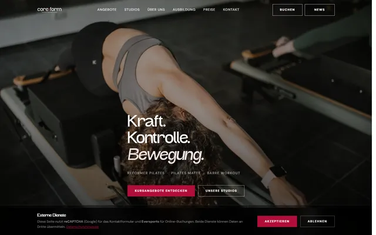
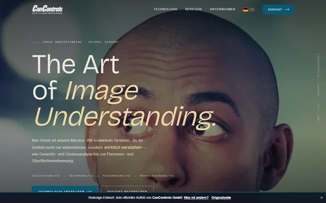
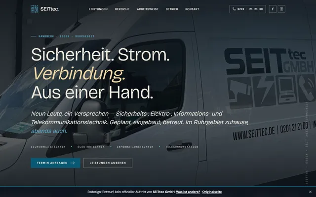

Über diesen Entwurf.
Ein Vorschlag, wie mb-eng.ch aussehen könnte: dieselben Inhalte, neu gebaut, auf Englisch und Deutsch, und für Suche und KI lesbar.
Auf einen Blick.
Ihre Inhalte, vollständig neu gebaut. Alle Seiten von mb-eng.ch stehen hier: 18 Referenzprojekte mit 82 Bildern und Ihren Bildunterschriften, die vier Workshops mit allen acht Flyern, Firma, Leistungen, Impressum, Verhaltenskodex und Datenschutzerklärung im Wortlaut. Ihr Werdegang stand bisher nur als Bild auf der Seite, jetzt ist er Text.
Zwei Sprachen: Englisch wie bisher, dazu jede Seite auf Deutsch, in Schweizer Rechtschreibung wie in Ihren Flyern. Zusammen 62 Seiten, ein Klick oben rechts wechselt die Sprache.
Für Google und KI-Assistenten lesbar: Im Bestand gibt es keine strukturierten Daten; der Schema Markup Validator findet darum nichts. Der Entwurf beschreibt Firma, Person, Leistungen, Projekte und Workshops maschinenlesbar im Code. PageSpeed Insights prüft das nicht, deshalb waren Ihre Werte dort trotzdem gut.
Leichter und ohne fremde Server: Die Startseite lädt 661 statt 808 KB, obwohl Ihr Panorama und sechs Projektbilder im ersten Bildschirm stehen; die Schriften kommen vom eigenen Server statt von Font Awesome.
Ihre Marke bleibt: Logo, Ihr Blau und Ihr Grau sind übernommen. Neu ist die Ziegelmauer, die sich beim Laden Reihe für Reihe aufbaut, und der Satz vom Gotthard: Vor der Hacke ist es duster.
Warnhinweis: Bildrechte prüfen
Einige Bilder auf mb-eng.ch stammen erkennbar von Dritten: eine Google-Earth-Aufnahme beim Mangdechhu-Projekt, ein Bild der Nachrichtenagentur MEHR beim Tohid-Tunnel. Auch das Panorama oben auf Ihrer Startseite, eine Stadtansicht von Miami, und die Beispielbilder von Metrostationen wirken wie Agentur- oder Fremdbilder. Das betrifft schon heute Ihre bestehende Seite. Bilder ohne Nutzungsrecht können teuer werden; bitte klären Sie für jedes dieser Bilder, ob Sie es verwenden dürfen, oder ersetzen Sie es durch eigene Aufnahmen.
Bitte beachten
Unverbindlicher Entwurf, für Suchmaschinen gesperrt, ausschliesslich aus öffentlich verfügbaren Inhalten und Bildern von mb-eng.ch. Keine Verbindung zum offiziellen Auftritt, keine Konkurrenz zum Original, auf Wunsch jederzeit entfernbar.
Wo dieser Entwurf steht.
Von der einfachen Ein-Seiten-Lösung bis zur High-End-Plattform. Danach richten sich Aufwand und Preis. Die Einordnung ist meine Einschätzung.
0-1 einfache Seite, ohne Unterseiten und Formulare~5 mehrseitiger Auftritt: Formular, SEO und GEO, Mediengalerie, News10 All-In: Online-Buchung, CMS, Login, KI-Assistent, Analytics
Dieser Entwurf
Ihr Bestand, neu gebaut
Meine Empfehlung
012345678910
- Ihr Bestand, neu gebaut (~3,5): mehrseitig mit Galerien und Formular, eine Sprache, ohne strukturierte Daten.
- Dieser Entwurf (~4,5): alle Inhalte in zwei Sprachen, strukturierte Daten, Projektgalerien mit Grossansicht, der Vortrieb als Zeitachse; das Formular öffnet das E-Mail-Programm.
- Meine Empfehlung (~5,5): dazu das Formular an Ihr Postfach angebunden, mit Spamschutz, und Weiterleitungen aller alten Adressen auf die neuen.
- 8 bis 10 sind der nächste Horizont, kein Rückstand: etwa Online-Anmeldung zu Workshops, ein KI-Assistent für erste Fragen oder eine datensparsame Besucherstatistik.
Was der Entwurf anders macht.
| Merkmal | Bisherige Seite | Dieser Entwurf |
|---|---|---|
| Technik | Hugo mit der Vorlage „Terrassa“, Symbole von Font Awesome | reines HTML, CSS und ein Skript, alles vom eigenen Server |
| Sprachen | Englisch, Deutsch nur in den PDF-Flyern | Englisch und Deutsch, jede Seite |
| Strukturierte Daten | keine | Firma, Person, Leistungen, Projekte, Workshops |
| Hauptüberschriften | sieben auf der Startseite | genau eine je Seite |
| Beschreibung für Suchmaschinen | eine Stichwortliste | ein eigener Satz je Seite |
| Vorschaubild beim Teilen | keins | eigenes Bild |
| Werdegang | als Bild, für Suche und KI unlesbar | als Text, 14 Stationen |
| Referenzen | Liste mit Anrissen | Karten, Zeitachse 1993 bis 2028, Bilder mit Grossansicht |
| Workshops | Termine von 2020, wie aktuell angekündigt | als Workshops von 2020, Angebot als Firmenworkshop |
Gemessen, nicht geschätzt.
Startseite, gemessen am 19.11.2026 im Browser bei 1440 px Breite, jeweils bis zum Laden plus drei Sekunden. Der Entwurf lief dabei auf einem Testserver ohne Komprimierung; im Livebetrieb wird er eher leichter.
808 → 661KB beim Laden der Startseite
2 → 1Server, von denen geladen wird
0 → 3Datensätze für Suche und KI auf der Startseite
7 → 1Hauptüberschriften auf der Startseite
Sorgenfrei umstellen
Ihre Seite ist heute eine statische Hugo-Seite auf einem nginx-Server. Der neue Auftritt ist ebenso statisch und passt auf denselben Platz. Er läuft zuerst parallel als Vorschau. Die bestehende Seite bleibt unangetastet, wird vollständig gesichert und ist auch nach der Umstellung jederzeit wiederherstellbar.
Ihre Marke bleibt.
Das Blau und das Grau Ihres Logos tragen die Seite. Dazu kommt ein tiefes Nachtblau, das an den Tunnel erinnert, und ein helles Blau für die Knöpfe.
Nachtblau#0b1016, Grund
Fläche#121a23, ruhige Flächen
Logoblau#336699, aus Ihrem Logo
Stahlgrau#acb0b0, aus Ihrem Logo
Hellblau#9fc3e6, Knöpfe
Papier#eef1f4, helle Abschnitte
NewsreaderÜberschriften: eine Schrift mit kleinen Häkchen an den Buchstaben und haarfeinen Linien, wie die Striche einer Bauzeichnung.
Hanken GroteskText: ohne Häkchen, klar und gut lesbar, auch klein am Handy.
Warum gerade ich.
Fester Preis
Keine Überraschungen. Fest heisst fest.
Ein Ansprechpartner
Weder anonyme Grossagentur mit langen Wegen noch Gelegenheitsanbieter. Alles aus einer Hand.
Wächst mit Ihnen
Formular, Workshop-Anmeldung, KI-Assistent: in Stufen, von kostenfrei bis zu einer kleinen Monatsgebühr.
Die Seite gehört Ihnen
Volle Nutzungsrechte, kein Abo-Zwang, kein Nachverkauf durch die Hintertür.
Kein Einzelfall.



Bis zum Livegang.
- Bitte bestätigen: Die Mitgliedschaft in der Expertenkammer von Swiss Engineering steht wie im Bestand. In der öffentlichen Liste der Kammer habe ich sie nicht mehr gefunden.
- Partnerverweis: Der Verweis auf ps-50.ch führt derzeit ins Leere. Im Entwurf habe ich ihn weggelassen.
- Workshops: Die Termine von 2020 stehen als vergangene Termine da, mit allen Inhalten und Flyern. Planen Sie neue Termine, kommen sie an dieselbe Stelle.
- Deutsche Fassung prüfen: Die deutschen Texte habe ich übersetzt, bei den Workshops nach Ihren eigenen Flyern. Bitte einmal lesen, vor allem die Fachbegriffe.
- Offene Stellen im Bestand: Die Workshop-Termine auf der Seite weichen von den Flyern ab (Verhandlungsführung 27./28. Mai gegenüber 28./29. Mai, Contract Management 3./4. Juli gegenüber 24./25. Juni); im Entwurf stehen die Termine der Seite. Bei Linth-Limmern heisst die Staumauer des Limmernsees in der Bildunterschrift „Upper lake“, laut Text ist der Muttsee das Oberbecken. Bei PostParc endet ein Satz unvollständig. Weiter: Beim FIDIC-Claim-Workshop steht „less than 85 % of the claim amount“, der Satz ist im Original unvollständig; ich habe ihn im Englischen gelassen und im Deutschen nach Ihrem Flyer gesetzt. Der Nationalstrassenabschnitt liegt laut Text in der Südostschweiz, der Bildname nennt die A9. Und der Werdegang nennt 2010 für den Gotthard, die Referenz 2011 bis 2013.
- Kleine Korrekturen: Tippfehler habe ich berichtigt, etwa Laqc zu Lacq, Storags zu Storage, constrcution, preparartion, responsibilty. Bildunterschriften stehen im Wortlaut.
- Rechtstexte: Die Datenschutzerklärung nennt Werbung über Google DoubleClick und eine Beispieladresse www.website.com, die Seite zeigt aber keine Werbung. Vor dem Livegang sollte sie neu gefasst werden, passend zum Schweizer Datenschutzgesetz. Impressum und Verhaltenskodex stehen im Wortlaut.
- Bildrechte: Alle Bilder stammen von Ihrer Seite. Einige tragen fremde Vermerke, etwa eine Google-Earth-Aufnahme beim Mangdechhu-Projekt und ein Bild der Agentur MEHR beim Tohid-Tunnel. Für den Livebetrieb sollten die Rechte an solchen Bildern geklärt sein.
- Skype: Im Kontakt steht wie im Bestand Ihre Skype-Adresse. Microsoft hat Skype im Mai 2025 eingestellt; ich würde sie streichen.
- Formular und Umzug: Das Formular geht im Livebetrieb an Ihr Postfach, mit Spamschutz. Alte Adressen wie /posts/references/project_gotthard/ leiten auf die neuen um, dann wird die Seite für Suchmaschinen freigegeben.
Was ist das hier? Ein Entwurf von Dr.-Ing. Suat Akyol, Inhalte und Bilder aus dem Bestand von mb-eng.ch. Anmerkungen gern an contact@akyol.de.